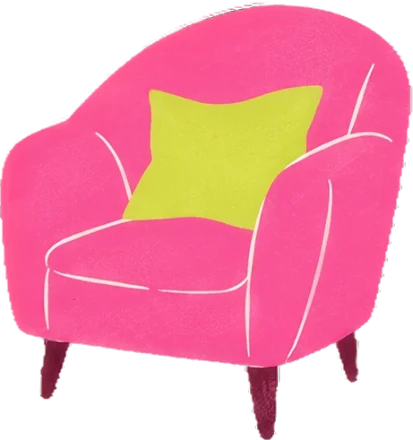

Manual da marca
As decisões, uma por assunto. Cada página diz o que é, como usar, o que pode e o que não pode.

Logo pronto
Versão principal, cores e tamanho mínimo.
Cor pronto
Paleta, pares de contraste e proporção.
Letra pronto
Quatro vozes e a regra de uma letra por voz.
Elementos parcial
Formas, desenhos, rabiscos, alfabeto, molduras, papel, fundos e padrões.
Foto proposta
Como a foto entra, o que fotografar e o consentimento.
Voz proposta
Como a Trama fala, com exemplos.

Layout proposta
Camadas, formatos, hierarquia e os dois modos.
Regras pronto
Sempre e nunca, todas juntas.